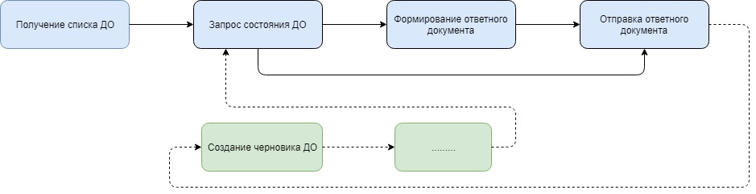

Категории документооборотов¶
Существуют две категории документооборотов:
Исходящие - организация отправляет документы в контролирующий орган, в эту категорию входит подавляющее большинство существующих типов документооборотов
Входящие - контролирующий орган направляет какие-то запросы организации, сюда относятся письма и требования ФНС.
Принципы работы с документооборотами обоих типов одинаковы, и методы работы с ними используются одни и те же. У входящих есть некоторые особенности, об этом поговорим отдельно.
Входящие документообороты¶
Отличительные особенности входящих документооборотов:
момент получения информации о возникновении документооборота;
регламент отправки ответных документов;
порождение исходящих документооборотов в ответ на входящий.
Момент получения информации о возникновении документооборота
В случае исходящего документооборота абонент является его инициатором: он изначально всё знает о документообороте и контролирует момент его появления. Входящий документооборот может возникнуть в любой момент времени, а абонент о нем может узнать только при запросе списка своих документооборотов, увидев в нем новый документооборот.
Регламент отправки ответных документов
У некоторых типов входящих документооборотов (например, требования ФНС) существует жесткий регламент сроков отправки ответных документов. Если в случае исходящего документооборота для отправки ответных документов в ходе документооборота у абонента нет ограничений по срокам, то при получении входящего требования ФНС у него есть 6 дней для формирования ответных документов, в противном случае последуют административные санкции к организации абонента.
Порождение исходящих документооборотов в ответ на входящий
Многие входящие документообороты порождают новые исходящие: в ответ на требование зачастую необходимо отправить в ФНС документы. Входящее письмо от контролирующего органа нередко требует формирование ответного исходящего письма. В то время как исходящий документооборот всегда заканчивается на самом документообороте, связанных с ним других документооборотов не возникает.